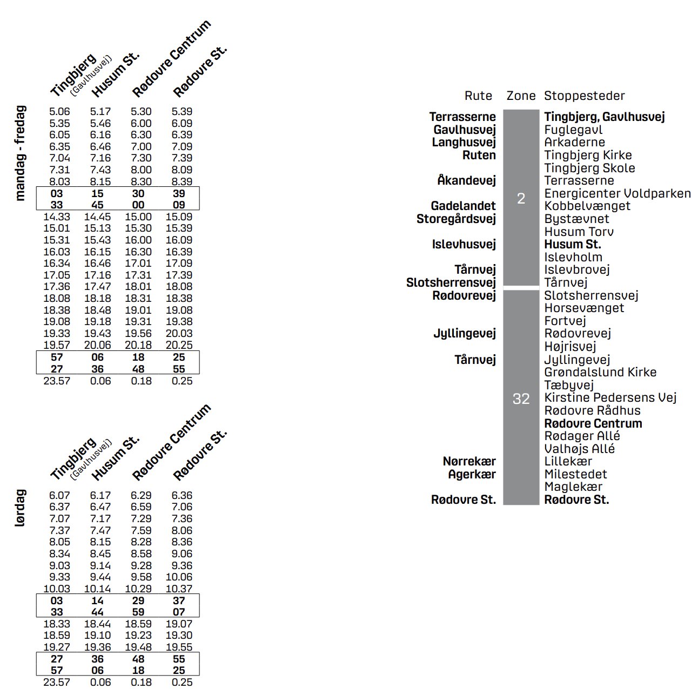
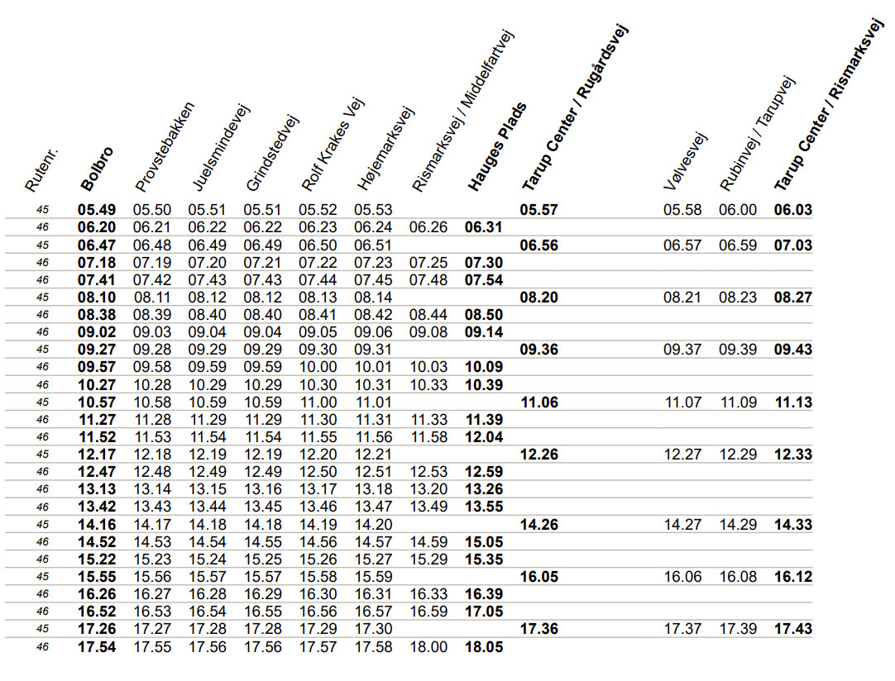
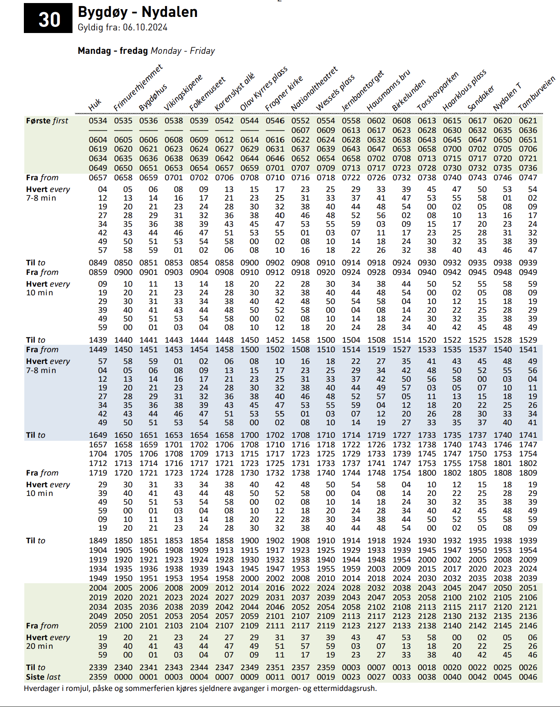
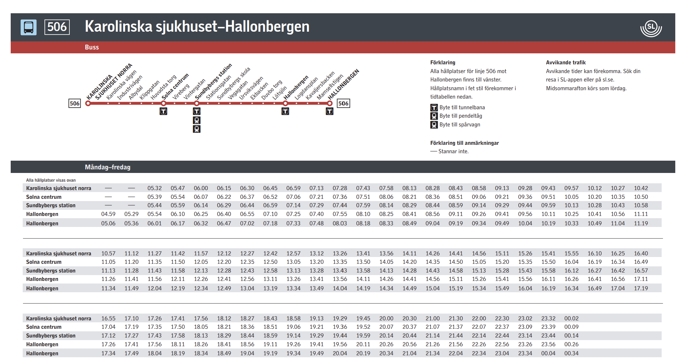
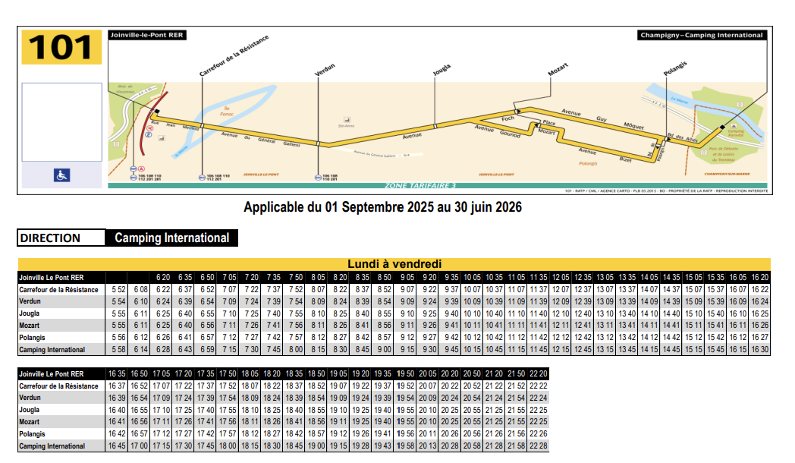

Each departure as a single cell
Introduction
This is the most typical timetable style and for a good reason, it's intuitive to read and although it takes up more space than hours as one column style, it's ideal for making a single timetable for a single line, to do it the most important stops are selected and their departures shown, for the rest of the stops we can look at the route diagram or something simillar. grouped together.
Examples
Copenhagen

Copenhagen has a separate timetable for each route, the most important stops are picked and displayed as column headers, we can approximate departure time for each stop using the stop list to the right. Hours with the same couple minutes are grouped and displayed in a rectangle, shortening the timetable.
Odense

Odense has a separate timetable for each route (or routes if a couple are simillar). The leftmost column represents the line number for each row. On top there is a list of stops simillar to Copenhagen timetable (I didn't put it, beacuse it would take too much space).
Oslo

Oslo has a separate timetable for groups of routes based on the first digit (ex. 30-37), each route has it's own two pages, the first is a timetable shown on the screenshot and the second is a stop list that has a column for each color of the timetable (here there would be three columns - blue, white and green). The stops are also grouped by their shared minutes with a "every x minutes" text on the leftmost column.
Stockholm

Stockholm has a separate timetable for each route, the most important stops are picked and displayed as the first column, we can approximate departure time for each stop using the stop list on top. Hours with the same couple minutes are not grouped, which makes the timetables pretty long, when the line has a lot of departures (for ex. timetable for line 1 not shown here has 8 pages).
Paris (infrequent lines)

Less frequent lines in Paris have a separate timetable for each route, most important stops are displayed as the first column. On top there is also a simplified map of the route.